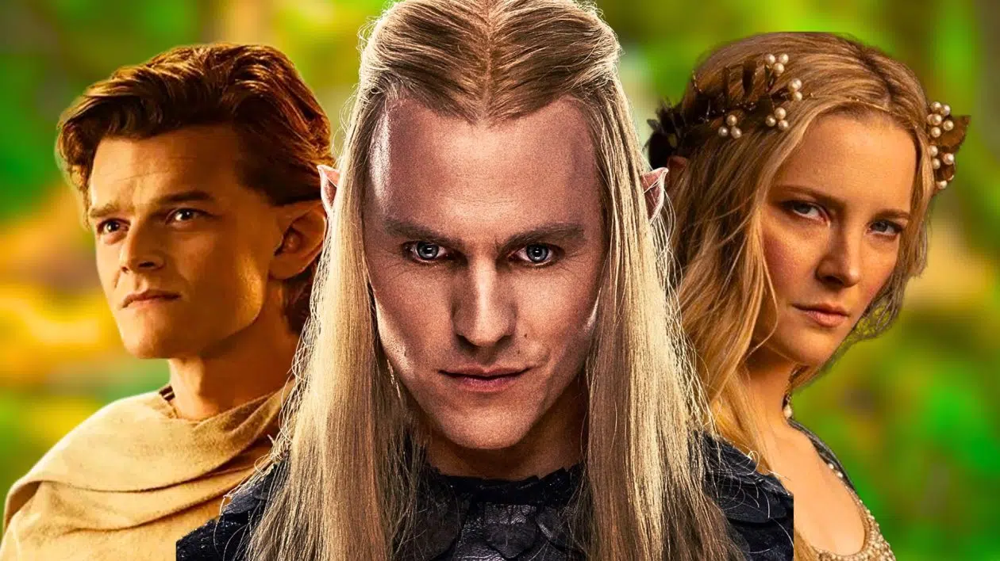

Sauron de retour dans Les Anneaux de Pouvoir Saison 3 ?

Alors que la saison 2 de Les Anneaux de Pouvoir approche de sa conclusion, les spéculations vont bon train sur l’avenir de la série. Sauron, le maître de la tromperie, pourrait bien être au centre de cette troisième saison tant attendue. Quels indices avons-nous déjà sur son rôle à venir ? Décryptage des premières informations.
Retour sur les saisons précédentes
La série Les Anneaux de Pouvoir a plongé les spectateurs dans la mythologie du Second Âge, explorant la montée en puissance de Sauron et la création des Anneaux. Si la première saison a posé les bases de son infiltration, la seconde promet d'approfondir sa conquête.
Premiers indices sur la saison 3
Les récentes déclarations des producteurs laissent entendre que Sauron prendra une place centrale dans la prochaine saison. “Nous voulons montrer sa montée en puissance et son influence grandissante sur la Terre du Milieu”, a confié l'un des showrunners.
Première image révélée
Le 10 février 2025, Amazon Prime Video a dévoilé une première image officielle de la saison 3. On y aperçoit une armée en marche dans les Terres du Sud, laissant penser que Sauron prépare une invasion à grande échelle.

Un Sauron plus menaçant que jamais
Après avoir manipulé les différents peuples de la Terre du Milieu, Sauron pourrait enfin dévoiler ses véritables intentions. Son ascension semble inévitable, et de nouveaux personnages devraient être introduits pour s’opposer à lui.
« Se déroulant plusieurs années après les événements de la saison 2, la saison 3 se situe au plus fort de la Guerre des Elfes et de Sauron, alors que le Seigneur des Ténèbres cherche à forger l’Anneau Unique qui lui donnera l’avantage nécessaire pour remporter la guerre et enfin conquérir toute la Terre du Milieu.«
Les nouveaux personnages attendus
Isildur – Héritier du trône de Gondor, de retour après sa disparition présumée. Anárion – Frère d'Isildur et futur roi de Gondor. Celebrimbor – Le forgeron des Anneaux devrait jouer un rôle clé dans leur finalisation. Adar – Toujours en vie, il pourrait défier l'autorité de Sauron. Glorfindel – Un puissant elfe dont l’apparition ravirait les fans du Légendaire de Tolkien.Date de sortie et bande-annonce
Le tournage de la saison 3 a été confirmé, mais sa sortie ne serait pas prévue avant 2026. Une bande-annonce officielle pourrait être révélée d'ici la fin de l'année.
Conclusion
Avec une intrigue qui s’intensifie et de nouveaux enjeux, la saison 3 de Les Anneaux de Pouvoir s’annonce comme un tournant majeur dans l’histoire de la série. Les fans n’ont plus qu’à patienter pour découvrir la suite des aventures en Terre du Milieu.